UI/UX Design · Team project
KelilingiJawa
A mobile app prototype for open trips in Java, designed around one idea: show how well each group trip matches you, then plan the days for you.
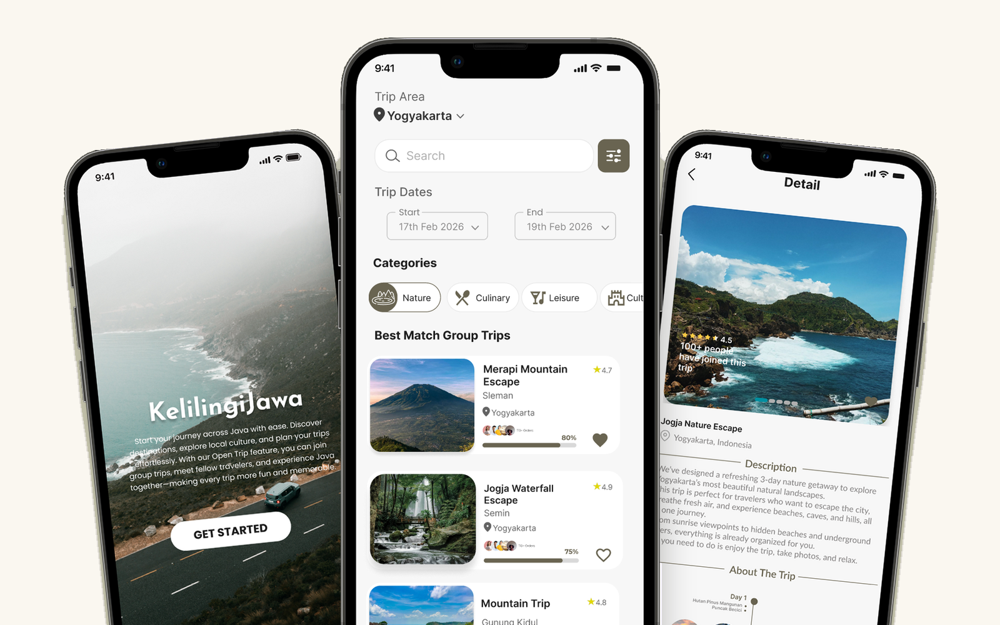
The problem
Open trips put strangers in one group. When budgets, travel styles, or interests differ, the trip is less comfortable for everyone.
Grouping is manual
Most platforms group participants by hand or by simple category filters.
No sense of fit
Users cannot tell how well a trip suits their budget, style, and schedule before joining.
The design goal
Make the match visible and the whole trip clear, so a first-time solo traveller can choose with confidence.
The screens
From onboarding to browsing, designed mobile-first.
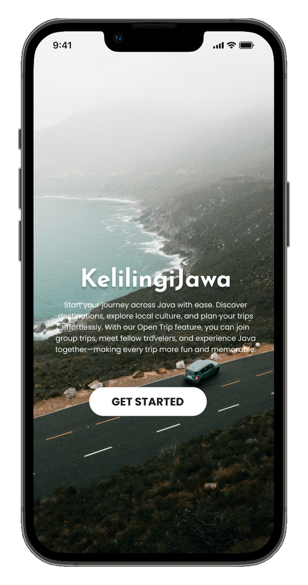
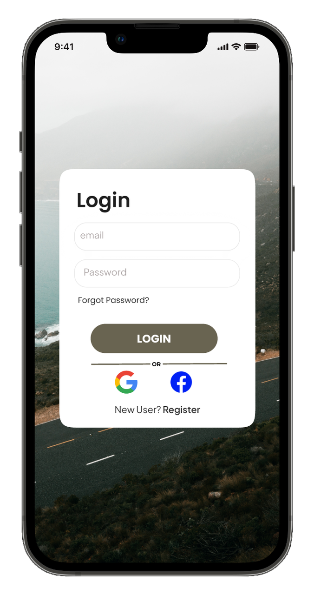
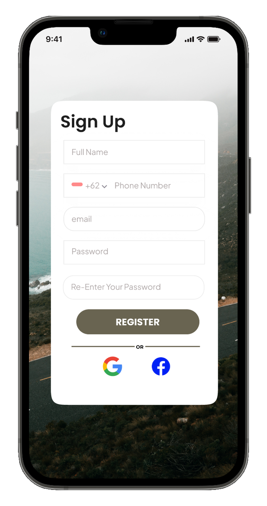
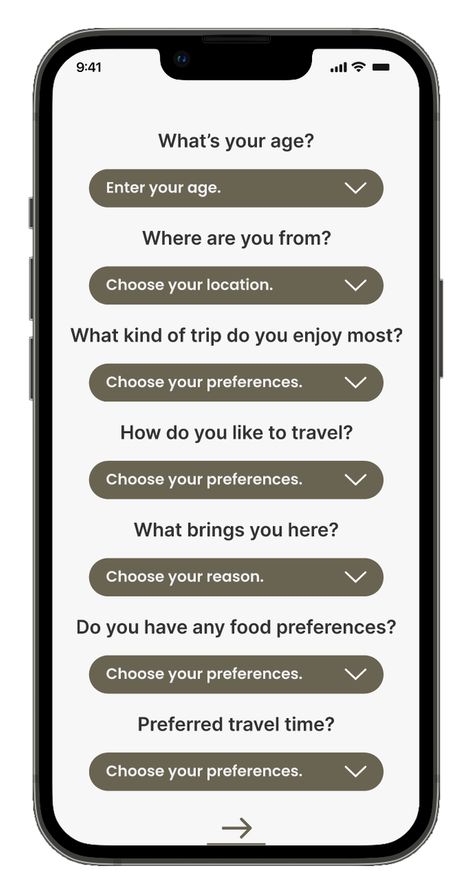
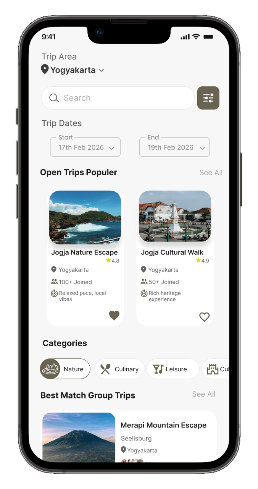
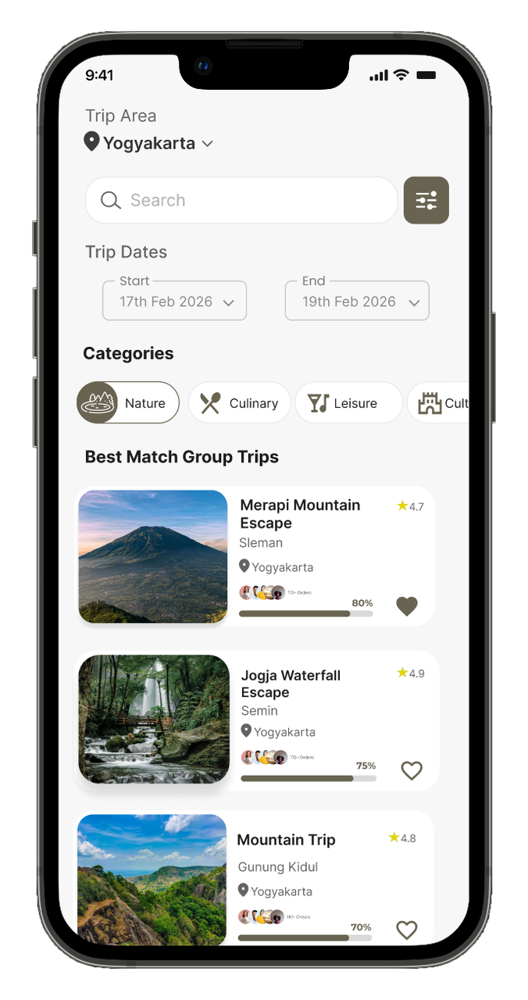
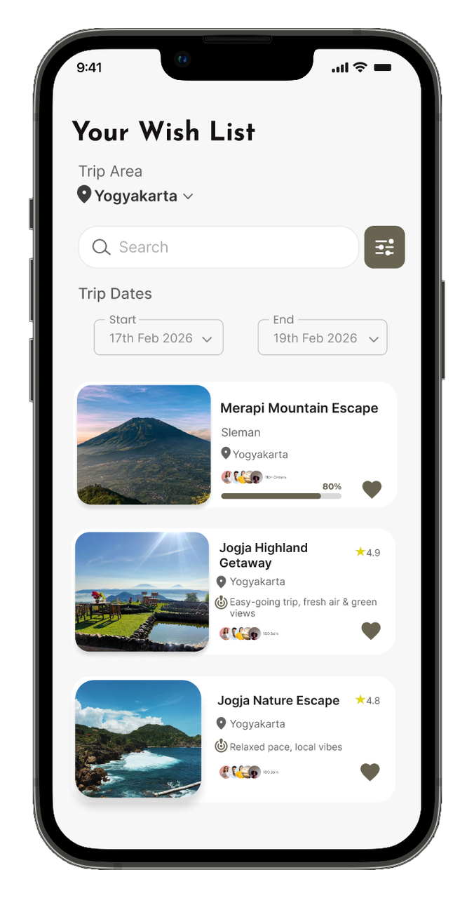
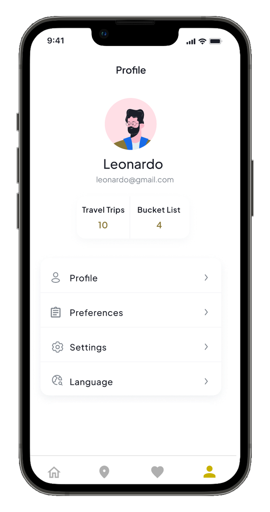
Trip detail
The most important screen is one long page you scroll through. Here it is in three parts, top to bottom.
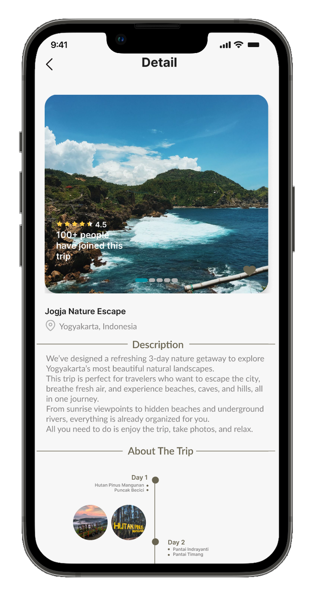
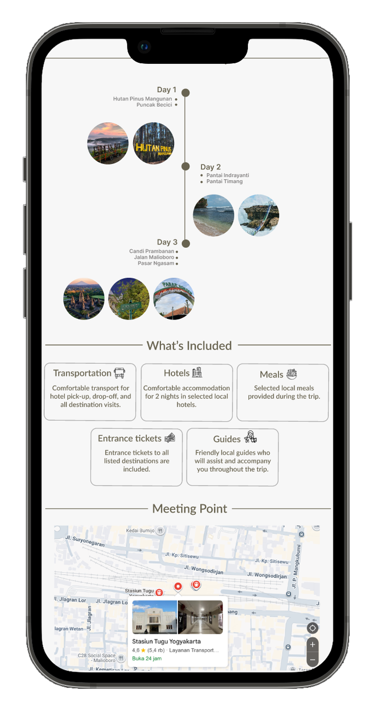
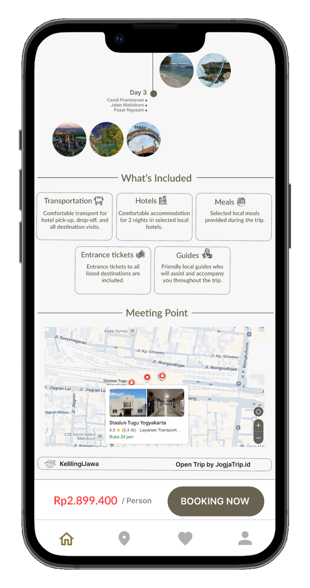
User flow
Four steps from opening the app to a confirmed booking.
Onboarding
Welcome screen, then sign up or log in with email, Google, or Facebook.
Preferences
Seven short questions: age, origin, trip type, travel style, motivation, food, and preferred time.
Discover
Search by area and dates, browse categories, open popular trips, or check best matches.
Book
Read the trip detail, enter booking details, pick a payment method, and get a confirmation.
Design decisions
The match is always visible
Each trip in Best Match shows a percentage and a progress bar, sorted from highest to lowest, so the choice is quick.
One page tells the whole trip
Description, a day-by-day timeline, what is included, and the meeting point on a map. Price and the booking button stay fixed at the bottom.
Calm, earthy look
Olive and brown tones with a mustard accent for active states, and a four-tab bottom navigation: home, trips, wishlist, profile.
The idea behind it
This was an AI course project. The proposal describes the matching engine; the screens show how its results would reach the user.
Similarity scoring
Preferences such as budget, style, schedule, and interests become weighted numbers, then are compared with each event.
Clustering
Users with similar preferences are grouped, and each group becomes a profile used to draft event templates.
Daily itinerary
After matching, the system drafts the day-by-day order of destinations, which organisers can adjust.
Limits and next steps
Limitations
- A Figma prototype only: no working app or backend
- Trips, prices, and match percentages are sample content, not output of a built model
- The organiser side, where events are published, is not designed yet
- The matching method is described only in concept: the weights, the clustering algorithm, and any comparison with simple filters are not specified or measured
- The prototype has not been tested with users
Next steps
- Test the prototype with real open-trip users
- Design the organiser dashboard and event publishing
- Build the matching engine and connect it to the screens
- Check text contrast and accessibility
My contribution
A team project for the Artificial Intelligence course at BINUS University, built by six people (Group 7). All of us shaped the research idea and wrote the paper. I was one of three people who designed the app interface in Figma, while the other teammates covered the presentation, the system concept, and the final manuscript.
What I did
- Helped formulate the research idea
- Wrote parts of the scientific article
- Designed app screens for the prototype in Figma
Done together
- Choosing the topic and the matchmaking approach
- The Figma interface, shared with two teammates
- The presentation, the system concept, and the final manuscript, handled by other teammates